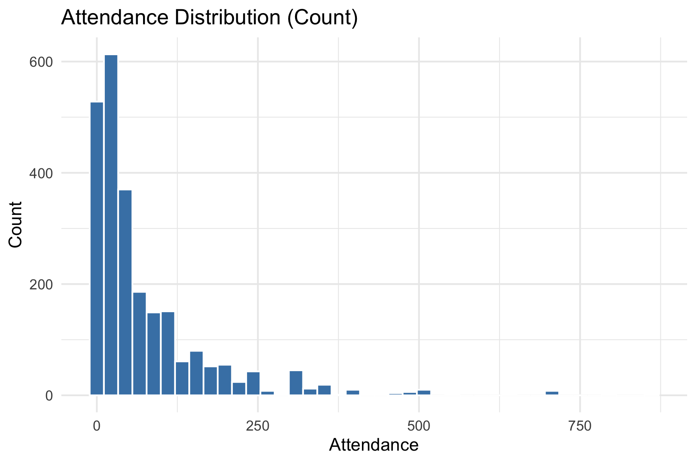
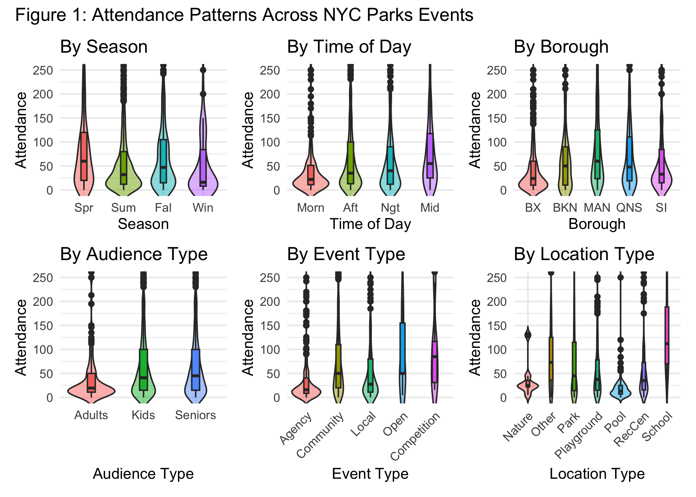
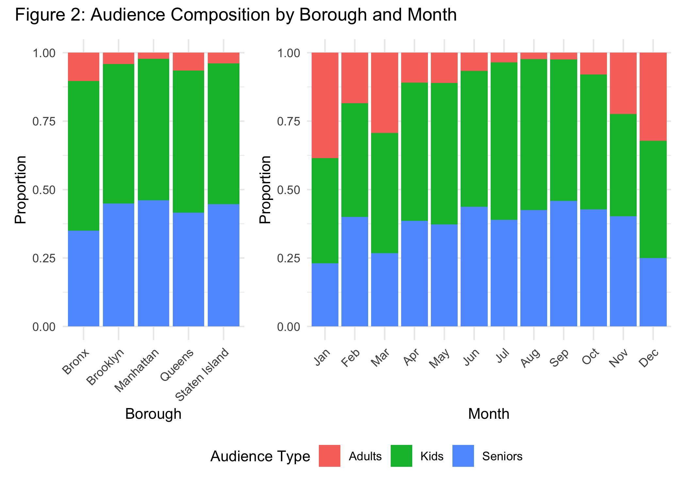
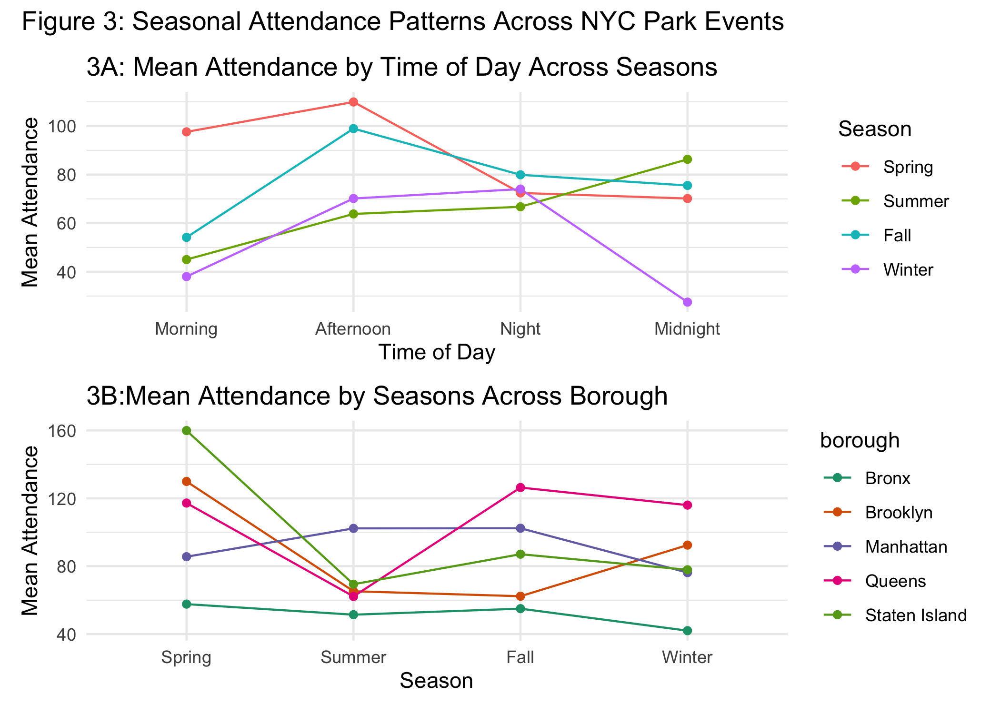
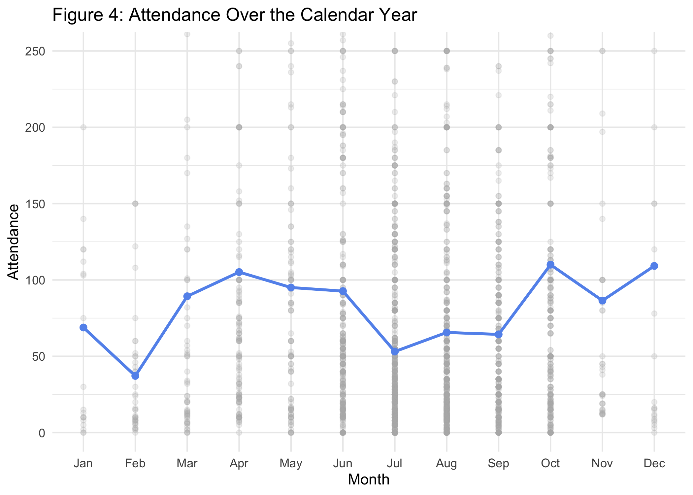

Project Report
Motivation
New York sells itself on vibrant public life—but a city’s real magnetism shows up in how well it shares its spaces and resources. Understanding what drives public participation in community events is essential for effective urban planning and equitable resource allocation. NYC Parks hosts thousands of special events each year, yet attendance varies widely across neighborhoods, seasons, and program types. These patterns matter because well-attended events strengthen community engagement, promote physical activity, and ensure that public resources are used efficiently. At the same time, imbalances in participation may reflect disparities in accessibility or programming that does not fully meet community needs. By identifying the conditions associated with higher participation, we aim to provide insights that can help guide more inclusive and effective public programming in New York City.
Initial Questions
At the start of our project, we were interested in understanding what factors influence participation in public events hosted by NYC Parks. Our initial guiding question was: Which characteristics of an event—such as season, borough, time of day, and intended audience—predict higher attendance? As we explored the dataset more deeply, this question evolved. We discovered that the audience variable was inconsistently recorded, prompting us to rethink how to capture who an event is designed for. This led us to formulate new questions, such as whether events that are more “kids-friendly,” “senior-friendly,” or “adults-only” tend to attract larger or smaller crowds. During exploratory analysis, additional questions emerged: Do certain boroughs consistently host higher-attended events? Are seasonal patterns stronger for some types of events than others? Does the timing of the event interact with audience type to influence turnout? These evolving questions guided both our descriptive analyses and our final modeling strategy.
Data
- Primary dataset: We used the Parks Special Events dataset from NYC Open Data, which documents thousands of public events hosted across New York City parks. The dataset includes information on event type, date and time, location, audience, and estimated attendance. Because the dataset changes over time as new events are added, we downloaded a static CSV to ensure full reproducibility of our analysis.
To prepare the data for analysis, we performed several cleaning and transformation steps in R:
Standardizing structure: We applied
janitor::clean_names()to create consistent variable names and converted the event datetime into structured components, including:date,year,month,day, andtime.Key predictors: A four-level
seasonvariable was created based on the event month (Spring: Mar–May, Summer: Jun–Aug, Fall: Sep–Nov, Winter: Dec–Feb). A categoricaltime_periodvariable (Morning, Afternoon, Night, Midnight) was derived from the event start hour. To characterize where each event occurred, we kept the event’sboroughandlocation_type. Program-level descriptors includedevent_typeandcategory, both of which summarize the content and purpose of the activity.Processing the inconsistent audience field: The raw
audiencecolumn included messy and inconsistent lists (e.g., “Children; Adults; Seniors; General Public”). We split these entries into cleaned lists and constructed three meaningful accessibility indicators:kids_friendly: event includes Children/Kids/Tot or is labeled General Publicsenior_friendly: event includes Seniors or General Publicadults_only: event does not qualify as kids_friendly
These binary variables allow us to capture important differences in event targeting despite inconsistencies in the raw text.
Cleaning and filtering attendance:
Attendancevalues were converted to numeric and events with missing or empty attendance, event type, or category were removed. We also restricted the dataset to events occurring on or after June 1, 2021, reflecting a period when park programming had largely resumed after COVID-related disruptions.Removing unnecessary variables: To streamline our analytic dataset, we dropped administrative or unused columns such as unit, group_name_partner, source, and intermediate audience-processing fields.
After cleaning, we have 2447 observations and 15 variables. These steps produced a tidy dataset aligned with our study.
Summary
| Step | Description | Key Outcome |
|---|---|---|
| Variable Standardization | Cleaned column names and parsed date-time fields | Structured date, year,
month, day, time |
| Derived Temporal Features | Created season and
time_period |
Enabled analysis by time and season |
| Audience Standardization | Generated demographic flags | Classified events by inclusivity |
| Filtering & Reduction | Dropped irrelevant or missing data | 2447 valid records retained |
| Final Dataset | Tidy data for analysis | 15 variables across all boroughs |
Descriptive Analysis
Attendance Summary
| Mean | Median | SD | Min | Max |
|---|---|---|---|---|
| 74.44 | 39 | 100.95 | 0 | 861 |

Across all post-COVID events, the average attendance was
approximately 74.4 participants, with a median of
39.
Attendance ranged from 0 to 861,
reflecting a right-skewed distribution dominated by small community
events and a limited number of very large gatherings. This spread
highlights the diversity of NYC Parks programming—from intimate
neighborhood activities to large-scale public festivals.
| Variable | Level | Count | Mean | Median | SD | Min | Max | Sum |
|---|---|---|---|---|---|---|---|---|
| season | Spring | 280 | 98.29 | 60.0 | 120.07 | 0 | 800 | 27522 |
| Summer | 1466 | 66.34 | 32.0 | 93.40 | 0 | 800 | 97259 | |
| Fall | 621 | 84.15 | 47.0 | 105.48 | 0 | 861 | 52258 | |
| Winter | 80 | 63.99 | 16.0 | 106.96 | 0 | 700 | 5119 | |
| time_period | Morning | 236 | 47.80 | 22.0 | 74.54 | 0 | 550 | 11281 |
| Afternoon | 1070 | 79.83 | 35.0 | 114.24 | 0 | 861 | 85418 | |
| Night | 730 | 71.51 | 40.0 | 96.83 | 0 | 800 | 52200 | |
| Midnight | 411 | 80.92 | 55.0 | 79.83 | 0 | 500 | 33259 | |
| borough | Bronx | 879 | 52.32 | 24.0 | 77.03 | 0 | 501 | 45993 |
| Brooklyn | 310 | 69.64 | 50.0 | 76.74 | 0 | 329 | 21588 | |
| Manhattan | 563 | 98.50 | 60.0 | 111.12 | 0 | 800 | 55457 | |
| Queens | 415 | 84.14 | 48.0 | 107.52 | 0 | 861 | 34917 | |
| Staten Island | 280 | 86.44 | 33.0 | 138.22 | 0 | 800 | 24203 | |
| event_type | Agency Produced Event | 563 | 49.39 | 16.0 | 105.01 | 0 | 861 | 27805 |
| Community Based Event | 1564 | 83.67 | 50.0 | 97.20 | 0 | 800 | 130858 | |
| Local Event | 300 | 71.62 | 27.5 | 104.93 | 0 | 556 | 21485 | |
| Open House | 9 | 104.44 | 50.0 | 111.17 | 5 | 345 | 940 | |
| Tournament/Competition | 11 | 97.27 | 85.0 | 84.25 | 16 | 261 | 1070 | |
| location_type | Nature Center | 7 | 39.29 | 25.0 | 41.68 | 5 | 130 | 275 |
| Other | 134 | 96.75 | 73.0 | 103.14 | 0 | 800 | 12964 | |
| Park | 1213 | 86.95 | 45.0 | 115.16 | 0 | 861 | 105465 | |
| Playground | 446 | 58.97 | 37.5 | 67.70 | 0 | 485 | 26300 | |
| Pool | 249 | 20.14 | 13.0 | 29.38 | 0 | 300 | 5016 | |
| Recreation Center | 315 | 61.35 | 35.0 | 78.18 | 0 | 550 | 19326 | |
| School | 83 | 154.36 | 112.0 | 138.28 | 5 | 715 | 12812 |
Table 2 shows attendance varied substantially across time, seasons, and event characteristics. Most events took place in Summer and Fall, reflecting NYC’s outdoor activity trends. Afternoon events had the largest counts, followed by Night. Attendance also differed across boroughs and event types, with parks and community events supporting the greatest participation. These subgroup summaries provide essential baseline context for downstream modeling.
Attendance Patterns Across Categories

The violin shapes represent the full distribution of attendance within each category, while the internal boxplots mark median and interquartile ranges. For interpretability, the y-axis is truncated at 250 attendees, encompassing the majority of events and minimizing distortion from a few extremely large gatherings.
The figure above presents violin–boxplots showing attendance distributions across major event characteristics:
- Season: Attendance is right-skewed in all seasons. Spring and fall events show slightly higher median attendance and more variability compared to summer and winter. This pattern likely reflects more comfortable weather conditions, which make outdoor programming more appealing and accessible.
- Time of Day: Night and midnight events have larger
audiences as well as larger variations.
- Borough: Brooklyn and Manhattan exhibit larger spreads and more high-attendance events. Staten Island and the Bronx tend to have lower medians, suggesting geographic differences in program scale or population density.
- Audience Type: Adults-only events have the lowest median attendance and a relatively compact distribution. Kids-friendly and senior-friendly events show wider spreads, with both groups including numerous higher-attendance outliers. This suggests that events designed for families or seniors may draw more participants than strictly adult-oriented programming.
- Event Type: Community-based, open house, and competetion events show higher medians and wider distributions, whereas agency-sponsored or local events tend to draw smaller and more consistent crowds.
- Location Type: School-based events show the highest median attendance and the widest spread, indicating frequent large gatherings. Parks and playgrounds also show a broad distribution with many mid- to high-attendance events. In contrast, nature centers and pools tend to host smaller events, with lower medians and tighter distributions.
Audience Targeting by Borough
To understand how NYC Parks programs are designed for different groups, we analyzed event audience targeting across boroughs and months. Using the cleaned audience-type indicators (Adults-only, Kids-friendly, and Senior-friendly), the stacked bar charts below show the proportion of events targeting each group across boroughs and months.

The left chart illustrates how event targeting varies across the five boroughs:
Kids-friendly events make up the majority of programming in every borough. This reflects NYC Parks’ emphasis on family-oriented and child-inclusive events.
Senior-friendly events also represent a large share, generally 40–45% of all events, indicating strong support for older adult engagement citywide.
Adults-only events are the smallest category, usually under 15%. This suggests that most park events are intended to be inclusive rather than restricted to adults.
Although boroughs differ slightly (e.g., Manhattan host the least adults-only events overall), event targeting is highly consistent across boroughs, reflecting similar programming priorities citywide.
The right chart shows how event targeting shifts throughout the calendar year:
Kids-friendly events dominate in all months, but the proportion is lower in winter and early spring (Jan–Mar) and higher in summer and early fall (Jun–Sep).
Senior-friendly events show a seasonal rise, increasing steadily from spring into late summer. Warmer months may support more senior-accessible outdoor programming.
Adults-only events fluctuate modestly, with slightly higher proportions in winter, possibly reflecting specific seasonal event types.
These patterns suggest that NYC Parks adjusts event design seasonally, offering more inclusive and multigenerational programming during peak outdoor months.
Seasonal Attendance Analysis
To investigate how event participation fluctuates with seasonal and temporal factors, we analyzed mean attendance patterns by both time of day and borough, stratified across the four seasons. These comparisons highlight the interplay between seasonal climate conditions, event scheduling, and geographic context in shaping NYC Parks’ public engagement.

Figure 3A: Mean Attendance by Time of Day Across Seasons
- Spring and fall has the highest attendance in the morning and afternoon.
- Summer attendance gradually increases throughout the day, with the highest turnout at midnight.
- Winter attendance is lowest, with a steep drop at midnight.
Figure 3B: Mean Attendance by Season Across Boroughs
- Spring is the strongest season for most boroughs, especially Brooklyn and Staten Island.
- Summer attendance dips across all boroughs except for Manhattan.
- Fall rebounds except for Brooklyn, with Queens showing high participation.
- Winter attendance declines everywhere, with the Bronx showing the lowest turnout.
Across NYC Parks events, attendance varies meaningfully by both season and location. Spring and fall afternoons draw the highest engagement, while winter events attract substantially smaller crowds. Borough-level differences are also pronounced: Queens consistently attracts larger audiences in both fall and winter, whereas the Bronx shows the lowest attendance across all seasons.
Attendance Over the Calendar Year

Figure 4 illustrates how attendance at NYC Parks events changes across the calendar year. Each grey point represents attendance at an individual event, while the blue line shows the monthly mean, highlighting broader seasonal patterns that daily fluctuations may obscure. This combined view provides both the overall seasonal trend and the variability within each month.
Attendance is lowest in February and increases sharply through March and April, reflecting improving weather and expanded outdoor programming. Attendance levels remain moderate and relatively steady from May to June, with a decline in July likely due to extreme heat or travel patterns. Participation increases again in September–October, with October showing the highest average attendance levels of the year. December shows another uptick, consistent with holiday-themed programming and community events.
It is important to note a wide within-month variability. The vertical spread of grey points indicates that months include a mix of small-scale events and occasional large gatherings.
Modeling
Modeling Workflow Diagram
┌──────────────────────────────────┐
│ Exploratory Data Analysis (EDA) │
│ - Histogram of attendance │
│ - mean–variance check │
│ → Identify skewness & overdispersion
└──────────────────────────────────┘
│
▼
┌───────────────────────────────────────────────┐
│ Univariate Analysis │
│ - Kruskal–Wallis tests for each predictor │
│ - Compute η² effect sizes │
│ → Assess which predictors show meaningful │
│ variation in attendance │
└───────────────────────────────────────────────┘
│
▼
┌──────────────────────────────────────────────────────────┐
│ Model Building: Cross-Validated Variable Selection │
│ - Define Simple, Medium, Full predictor sets │
│ - Monte Carlo CV with RMSE as performance metric │
│ → Select predictor set with best out-of-sample RMSE │
└──────────────────────────────────────────────────────────┘
│
▼
┌──────────────────────────────────────────────────────────┐
│ Final Model Fitting │
│ - Fit Negative Binomial regression using selected vars │
│ - Extract IRRs and confidence intervals │
│ → Interpret effect sizes and direction of associations │
└──────────────────────────────────────────────────────────┘
│
▼
┌───────────────────────────────────────────────┐
│ Final Inference & Interpretation │
│ - Discuss strongest predictors │
│ - Compare event characteristics & attendance │
│ - Guide practical recommendations │
└───────────────────────────────────────────────┘Exploratory distribution plots
Before conducting formal statistical analyses, we examined the
distribution of the outcome variable, attendance, to assess its shape
and variability. Understanding the distribution is essential for
determining whether parametric assumptions are met and for selecting an
appropriate modeling framework.

| Mean Attendance | Variance of Attendance |
|---|---|
| 74.44 | 10191.33 |
Exploratory plots revealed that attendance is highly right-skewed with a long tail, and the variance greatly exceeds the mean, indicating overdispersion. These characteristics justify the use of non-parametric tests in the univariate stage and a Negative Binomial model for the final multivariable analysis.
Univariate Analysis
We first examined whether attendance differed across levels of each categorical predictor (season, time of day, borough, event type, location type, and audience-related indicators) using the Kruskal–Wallis test, a non-parametric method appropriate for skewed count outcomes. For each variable, we also computed an η² effect size to quantify the magnitude of group differences. These results provide an initial assessment of which predictors meaningfully explain variation in attendance and should be considered in subsequent multivariable modeling.
| variable | p.value | effect_strength |
|---|---|---|
| season | 3.73e-10 | small |
| time_period | 3.22e-10 | small |
| borough | 1.29e-29 | small |
| event_type | 1.31e-39 | medium |
| location_type | 2.51e-50 | medium |
| kids_friendly | 1.36e-08 | small |
| senior_friendly | 1.02e-09 | small |
| adults_only | 1.36e-08 | small |
Across all predictors, the Kruskal–Wallis tests indicated statistically significant differences in attendance (p < 0.05), with effect sizes ranging from very small to medium. Variables with medium η² values (event type and location type) show stronger associations with attendance and were prioritized for inclusion in the multivariable model.
To evaluate their combined predictive value and adjust for potential confounding, we proceeded to build multivariable models.
Multivariable Model: Negative Binomial Regression
To identify the predictors that best explain variation in attendance, we compared several candidate models using cross-validated RMSE, an unbiased measure of out-of-sample predictive performance. We used log-linear models for this stage because they are computationally stable and well-suited for repeated Monte Carlo cross-validation. Based on the RMSE comparison, we selected the most predictive set of variables and then refit the final model using Negative Binomial regression, which is appropriate for inference with overdispersed count outcomes such as attendance.
| model | mean_RMSE |
|---|---|
| Simple | 1.46 |
| Medium | 1.43 |
| Full | 1.43 |
Cross-validated RMSE values were similar across the three candidate models, with the Full model achieving the lowest prediction error (RMSE = 1.4263). Although the difference is modest, the Full model provided the best out-of-sample predictive performance and was therefore selected for the final analysis.
Using the selected predictor set, we fit our final model with a Negative Binomial regression:
| term | estimate | std.error | statistic | p.value | conf.low | conf.high |
|---|---|---|---|---|---|---|
| (Intercept) | 14.165 | 0.479 | 5.533 | 0.000 | 6.217 | 41.094 |
| seasonSummer | 0.908 | 0.090 | -1.073 | 0.283 | 0.758 | 1.083 |
| seasonFall | 0.933 | 0.095 | -0.730 | 0.466 | 0.773 | 1.122 |
| seasonWinter | 0.718 | 0.154 | -2.146 | 0.032 | 0.535 | 0.980 |
| time_periodAfternoon | 1.357 | 0.090 | 3.412 | 0.001 | 1.130 | 1.623 |
| time_periodNight | 1.254 | 0.095 | 2.376 | 0.018 | 1.034 | 1.514 |
| time_periodMidnight | 1.168 | 0.105 | 1.487 | 0.137 | 0.948 | 1.435 |
| boroughBrooklyn | 1.133 | 0.086 | 1.449 | 0.147 | 0.961 | 1.341 |
| boroughManhattan | 1.635 | 0.073 | 6.694 | 0.000 | 1.427 | 1.876 |
| boroughQueens | 1.249 | 0.075 | 2.979 | 0.003 | 1.080 | 1.448 |
| boroughStaten Island | 1.402 | 0.086 | 3.932 | 0.000 | 1.189 | 1.660 |
| event_typeCommunity Based Event | 1.334 | 0.070 | 4.107 | 0.000 | 1.160 | 1.531 |
| event_typeLocal Event | 1.032 | 0.096 | 0.328 | 0.743 | 0.855 | 1.248 |
| event_typeOpen House | 1.244 | 0.412 | 0.529 | 0.597 | 0.602 | 3.110 |
| event_typeTournament/Competition | 2.144 | 0.369 | 2.065 | 0.039 | 1.108 | 4.849 |
| location_typeOther | 2.096 | 0.473 | 1.565 | 0.118 | 0.724 | 4.764 |
| location_typePark | 1.992 | 0.463 | 1.488 | 0.137 | 0.699 | 4.407 |
| location_typePlayground | 1.303 | 0.467 | 0.567 | 0.571 | 0.455 | 2.910 |
| location_typePool | 0.554 | 0.470 | -1.255 | 0.210 | 0.192 | 1.248 |
| location_typeRecreation Center | 1.302 | 0.466 | 0.566 | 0.571 | 0.455 | 2.903 |
| location_typeSchool | 3.991 | 0.479 | 2.890 | 0.004 | 1.366 | 9.224 |
| kids_friendlyTRUE | 1.741 | 0.094 | 5.918 | 0.000 | 1.454 | 2.074 |
| senior_friendlyTRUE | 1.053 | 0.064 | 0.803 | 0.422 | 0.932 | 1.187 |
In this model, attendance is modeled as a function of season, time of day, borough, event type, location type, and audience indicators. We exponentiate the coefficients to obtain incidence rate ratios (IRRs) and 95% confidence intervals, which quantify the multiplicative change in expected attendance associated with each predictor while holding the others constant.
The Negative Binomial model shows that several event characteristics are strongly associated with attendance. Compared with spring events, winter events have significantly lower expected attendance (IRR = 0.72, 95% CI: 0.53–0.98), while summer and fall do not differ significantly from spring.
Afternoon and night events attract more participants than morning events (Afternoon: IRR = 1.36, 95% CI: 1.13–1.62; Night: IRR = 1.25, 95% CI: 1.03–1.51). Relative to Bronx, events in Manhattan, Queens, and Staten Island show higher attendance (IRRs ≈ 1.25-1.64), with Manhattan having the largest effect.
Community-based events have higher attendance than Agency Produced events (IRR = 1.33, 95% CI: 1.16–1.53), and events held in schools and parks are particularly well-attended (School: IRR = 3.99, 95% CI: 1.37–9.22; Park: IRR = 1.99, 95% CI: 0.70–4.41).
For the audience, the kids-friendly and senior-friendly indicators are not individually significant after adjustment for other covariates.

Discussion
This project provides insight into how seasonal, temporal, geographic, and programmatic factors shape public participation in NYC Parks events. Descriptively, attendance was highly variable and right-skewed, with spring and fall events—especially in the morning and afternoon—drawing the highest engagement. Borough-level differences were substantial: Queens attracted larger audiences in fall and winter, while the Bronx had the lowest turnout, suggesting uneven distribution of community engagement across the city.
Multivariable Negative Binomial modeling clarified which characteristics independently predict attendance. After adjustment, winter events had significantly lower expected attendance, and afternoon and night events drew more participants than morning events. Borough differences persisted, with Manhattan, Queens, and Staten Island showing higher expected attendance relative to the Bronx. Community-based and competition-style events attracted significantly more participants, and events held in schools or parks had the strongest positive associations. Adults-only events consistently drew fewer participants, reinforcing the importance of family-inclusive programming.
Overall, these findings highlight actionable opportunities for NYC Parks. Strengthening winter programming, expanding family-oriented events, and leveraging high-performing locations such as schools and parks may help increase turnout. Borough disparities also suggest a need for targeted outreach and resource allocation to support lower-attendance areas.
Limitations
This analysis is based on the dataset available as of December 4, 2025, which continues to update over time; therefore, results reflect only a snapshot rather than the full evolving dataset. Additionally, the models do not incorporate external factors such as weather, neighborhood socioeconomic characteristics, or event marketing reach, which may also influence attendance and could be explored in future work.